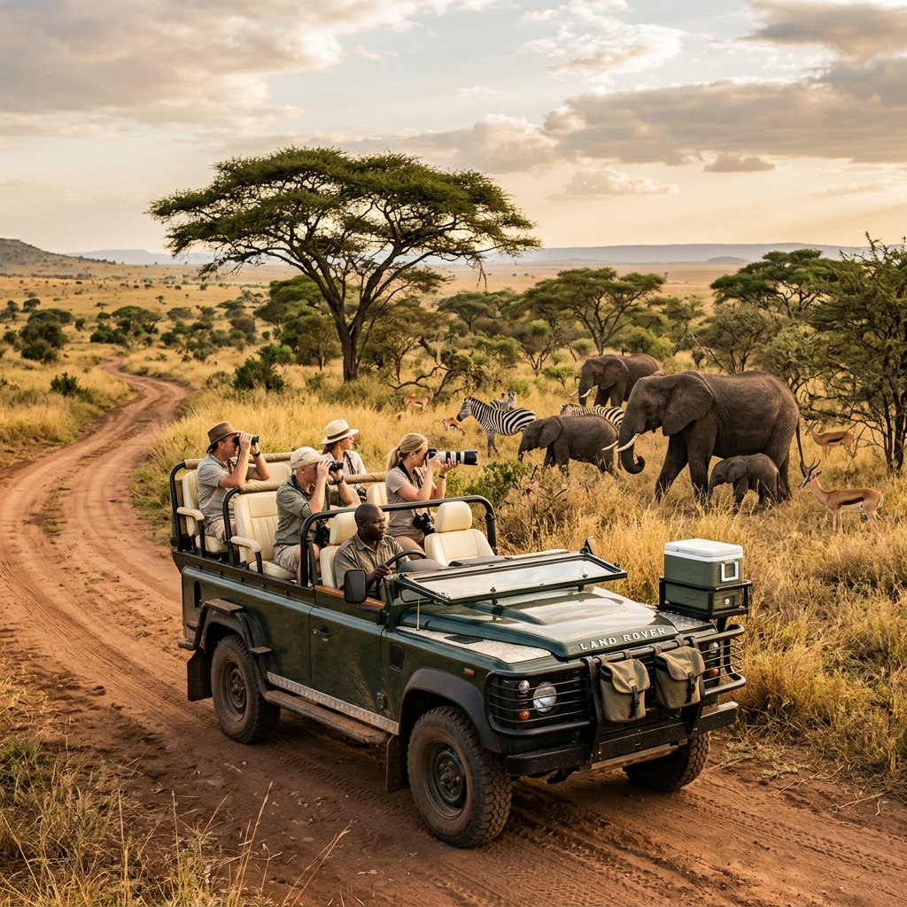

Endless, open plains home to astonishing quantities of wildlife.
At 14,763 square kilometres in size, A Serengeti Safari is arguably the finest safari experience directly in a national park in Africa and offers a wealth of wildlife viewing opportunities. Pretty much every large animal in East Africa can be regularly seen in the national park or wider ecosystem.
When you include all the contiguous protected areas, of which Ngorongoro is one of the most noteworthy, the total size of the entire Serengeti-Mara ecosystem is a staggering 30,000 square kilometres packed choc-full of truly extraordinary wildlife sightings.
Renowned for its predators – especially lions, leopards and cheetahs – and with plenty of elephants favouring the western woodlands of Grumeti, a Serengeti Safari experience dazzles even the most hardened safari critics.


The vast and beautiful Serengeti is one of Africa’s most awe-inspiring safari areas. The sheer volume of animals here is extraordinary: estimates suggest around one million wildebeest, hundreds of thousands of zebra and Thomson’s gazelle, and tens of thousands of impala, Grant’s gazelle, topi, hartebeest, eland and other antelopes live here – all hunted by the predators for which these plains are famous.
Some of these animals resides permanently in home areas, which are excellent for safaris all year round. But most of the wildebeest and good numbers of other species are permananently on the move in the ‘Great Migration’ – a remarkable spectacle that is one of the greatest wildlife shows on earth.
If you plan carefully, it’s still possible to witness this in wild and remote areas without too many fellow enthusiasts crowding the scene.
The best times to visit are from Jan to Feb or June through Sept. Plan around The Great Migration: winter is best for Southern Serengeti, while Western/Northern Serengeti are best for summer/autumn.
Temperatures remain relatively constant with daytime highs in the 80s. April and May see the most rainfall, and many lodges and camps close for this slower season.